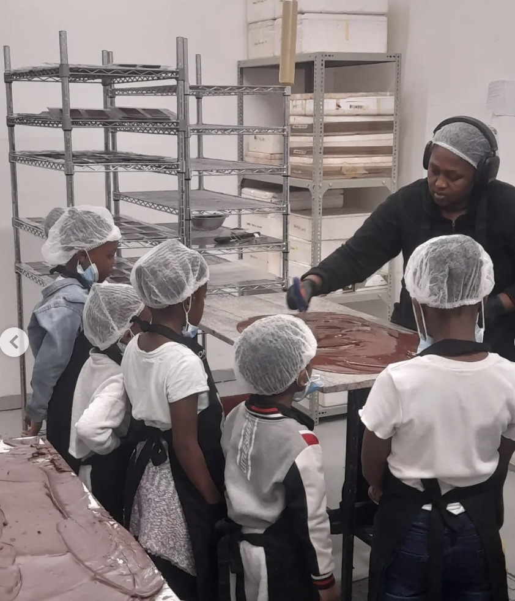
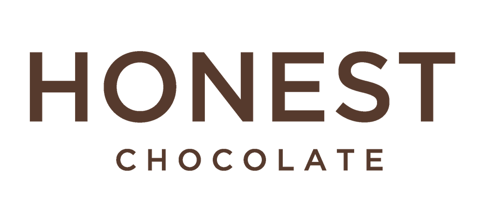
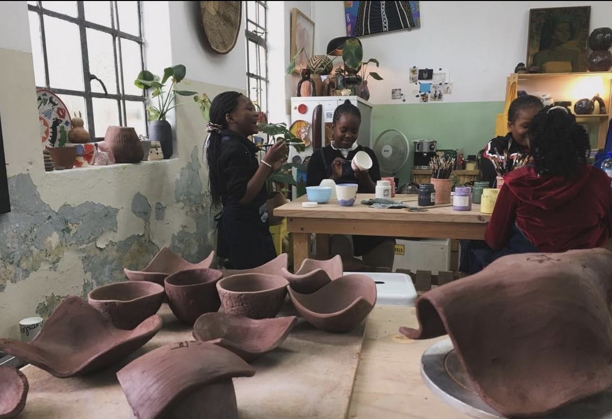

Creative collaboration
Stage to Screen
A creative partnership that connects children with new ways to explore stories, performance and making.
Our Partners
Artists, organisations and local places help children meet new ideas, skills and ways of seeing the world.
A visit behind the scenes
The children visited the Honest Chocolate factory, met the makers and got a close look at how chocolate is made. Thank you to Aa’ishah and the team for welcoming them so warmly.



A shared learning experienceLearning across Langa and Cape Town
These collaborations and visits bring different knowledge into the children’s world, from storytelling and growing to art, movement and making.
Creative collaboration
A creative partnership that connects children with new ways to explore stories, performance and making.

Story, language and clay
Storytelling and wet clay brought isiXhosa to life through words, touch and shared making.
See the project
Art and discovery
The museum’s education team welcomed the children for their first visit, exploring artworks and new ways of seeing.
See the visit
Movement and confidence
Joined the children for a bicycle outing that made space for movement, confidence and fun.
See the outing
Art in the community
One of the children’s stops on a day exploring how art changes and speaks to the world around us.
See the gallery visit
Knowledge of plants
A garden visit brought the children’s questions about plants, land and the stories of the earth to life.
See the garden visit
Food and growing
A garden visit explored food, medicinal plants and how caring for the land connects us.
See the garden story
Community art
The children brought colour to a shared space through a community painting for Mandela Day.
See the Mandela Day projectSome relationships are ongoing partnerships; others are people and places who have welcomed the children for a visit or shared a specific activity.
Two ways to partner
Share your time, knowledge or creative practice directly with the children.
Build a partnership that brings resources and new experiences to the programme.
Contact Us
Ask what is most useful right now or share an idea for getting involved. Lungiswa will coordinate the details with you by email or phone.